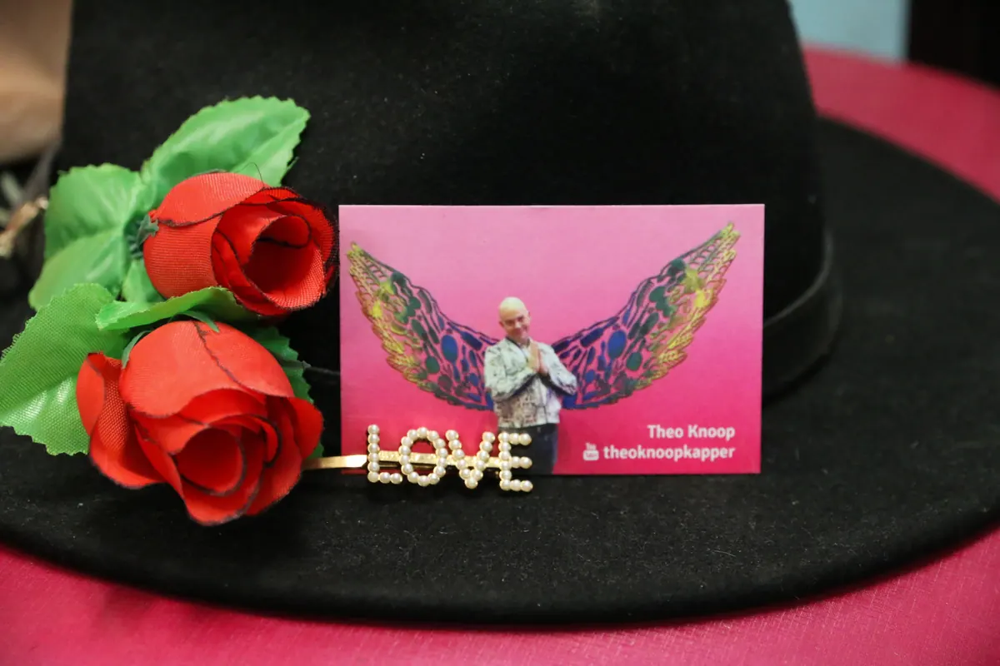

Kapper
Kapper Kuif "zegt u het maar!

Kapper Kuif
Welkom bij Kapper Kuif Nijmegen, waar uw haarwensen onze passie zijn. Al meer dan 40 jaar zijn wij een vertrouwd adres in Nijmegen voor iedereen die op zoek is naar een professionele en persoonlijke kapperservaring.
Onze Expertise:
Onze oprichter en knipkampioen, Theo Knoop, combineert zijn jarenlange ervaring met een passie voor het kappersvak. Samen met zijn zoon Djim Knoop en een toegewijd team van ZZP kappers bieden wij een breed scala aan kappersdiensten. Onze diversiteit in stijlen en technieken zorgt ervoor dat elke klant met een tevreden gevoel onze salon verlaat.
Wat Wij Bieden bij Kapper Kuif:
- Ervaren en Creatieve Kappers: Van klassieke snits tot de nieuwste trends, wij hebben de kennis en vaardigheden om uw haarwensen te vervullen.
- Flexibiliteit en Comfort: Maak eenvoudig online of telefonisch een afspraak voor een moment dat u het beste uitkomt.
- Een Familie Salon: Wij zijn er voor het hele gezin. Of u nu een man, vrouw of kind bent, bij ons is iedereen welkom.
- ZZP Kappersconcept: Onze unieke benadering biedt kappers de vrijheid om hun klantenbestand op te bouwen en te werken in een stressvrije omgeving.
Duurzaam en Sociaal Betrokken:
Bij Kapper Kuif geloven wij in het teruggeven aan de gemeenschap. We zijn betrokken bij verschillende sociale projecten, zoals 'Kapper voor de Daklozen' en 'De Vierdaagse Kapper', waarbij we onze vaardigheden inzetten voor een goed doel.
Bezoek Kapper Kuif:
Kom langs bij onze salon aan de Hatertseweg 115 in Nijmegen. Onze openingstijden zijn van dinsdag tot zaterdag, van 9:00 tot 18:00 uur. Op maandagen en zondagen zijn we gesloten. Voor een afspraak kunt u bellen naar 024 355 9044 of online boeken via ons planportaal.
Bij Kapper Kuif Nijmegen zeggen we: "Zegt u het maar!" – wij zijn er om uw haarwensen werkelijkheid te maken.
Contact en openingstijden
- AdresHatertseweg 115, 6533 AE Nijmegen Kaart
- Openingstijden
maandag gesloten dinsdag 09:00–18:00 woensdag 09:00–18:00 donderdag 09:00–18:00 vrijdag 09:00–18:00 zaterdag 09:00–18:00 zondag gesloten - Goed om te wetenknippenkleurenonline boekenherenkinderen
- Contactkapper-kuif.nl
0243559044
tkshairdresser@gmail.com
Facebook - ReviewsBekijk de reviews op Google Maps
Hier vind je Kapper Kuif "zegt u het maar!
Kaart: © OpenStreetMap-bijdragers